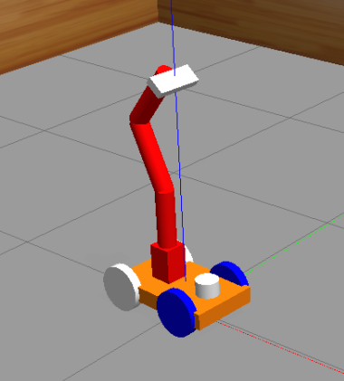
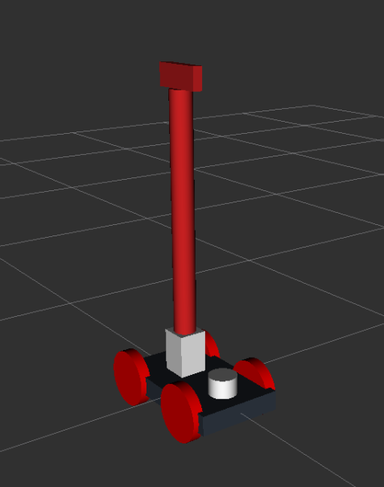

the RoboCLuedo Project no.3 – robot “hunter” URDF model – User Manual
Contents
Model file structure
inside the folder robocluedo_hunter_urdf_model there are these files:
generate_model.shis a script to tect the correctness of the model; it also generates a.pdfschematic of the modelrobocluedo_xacro.xacrois (as the name suggests) the XACRO model of a robot labeled robocluedo_robot. the model is split into three files:robocluedo_gazebo_materials: graphical appearance of the robotrobocluedo_chassis: the moving platform of the robotrobocluedo_arm: the robotics armrobocluedo_arm_gripper: the gripper of the robotic arm; it includes the link labeled cluedo_linkrobocluedo_gazebo_sensing: definition of the Gazebo pluging related to the sensing; vision, laser, everything inside this filerobocluedo_sensing: this file contains the sensors mounted on the robotrobocluedo_gazebo_plugins: definition of the Gazebo plugins, without the sensing partrobocluedo_transmission: Gazebo controllers
HOW TO generate the model
execute the file generate_model.sh; the URDF and its schematic will be located into the folder model with names
robocluedo_urdf.urdffor the URDF model,and
robocluedo_urdf.pdffor the schematic
the output should be like the following:
robot name is: robocluedo_robot
---------- Successfully Parsed XML ---------------
root Link: base_link has 4 child(ren)
child(1): arm_base_link
child(1): arm_link_01
child(1): arm_link_02
child(1): arm_link_03
child(1): cluedo_link
child(1): left_grip_link
child(2): right_grip_link
child(2): laser
child(3): link_left_wheel
child(4): link_right_wheel
Created file robocluedo_robot.gv
Created file robocluedo_robot.pdf
HOW TO generate the package with Moveit
first of all, use the setup assistant to generate the package. Inside the project, robocluedo_robot.
roslaunch moveit_setup_assistant setup.assistant.launch
the code generated by the setup assistant won’t work at the beginning. Here are the fixes:
In trajectory_execution.launch.xml, we need to comment line 21
In config/ros_controllers.yaml, let’s modify the gain of the proportional controllers
In config/joint_limits.yaml let’s set to 1 the scaling factor
apply the gazebo world fix (see below)
(optional) create the run.launch file
(optional) setup the RViz environment
(optional) RViz config file fix
(optional) install MoveBase
file ros_controllers.yaml
# Simulation settings for using moveit_sim_controllers
moveit_sim_hw_interface:
joint_model_group: arm_group
joint_model_group_pose: extended
# Settings for ros_control_boilerplate control loop
generic_hw_control_loop:
loop_hz: 300
cycle_time_error_threshold: 0.01
# Settings for ros_control hardware interface
hardware_interface:
joints:
- arm_joint_01
- arm_joint_02
- arm_joint_03
- arm_joint_04
- joint_a_left_wheel
- joint_a_right_wheel
- joint_left_wheel
- joint_right_wheel
sim_control_mode: 1 # 0: position, 1: velocity
# Publish all joint states
# Creates the /joint_states topic necessary in ROS
joint_state_controller:
type: joint_state_controller/JointStateController
publish_rate: 50
controller_list:
- name: arm_group_controller
action_ns: follow_joint_trajectory
default: True
type: FollowJointTrajectory
joints:
- arm_joint_01
- arm_joint_02
- arm_joint_03
- arm_joint_04
arm_group_controller:
type: effort_controllers/JointTrajectoryController
joints:
- arm_joint_01
- arm_joint_02
- arm_joint_03
- arm_joint_04
gains:
arm_joint_01:
p: 10
d: 0
i: 0
i_clamp: 0
arm_joint_02:
p: 10
d: 0
i: 0
i_clamp: 0
arm_joint_03:
p: 10
d: 0
i: 0
i_clamp: 0
arm_joint_04:
p: 10
d: 0
i: 0
i_clamp: 0
file joint_limits.yaml
# joint_limits.yaml allows the dynamics properties specified in the URDF to be overwritten or augmented as needed
# For beginners, we downscale velocity and acceleration limits.
# You can always specify higher scaling factors (<= 1.0) in your motion requests. # Increase the values below to 1.0 to always move at maximum speed.
default_velocity_scaling_factor: 1
default_acceleration_scaling_factor: 1
# Specific joint properties can be changed with the keys [max_position, min_position, max_velocity, max_acceleration]
# Joint limits can be turned off with [has_velocity_limits, has_acceleration_limits]
joint_limits:
arm_joint_01:
has_velocity_limits: true
max_velocity: 0.2
has_acceleration_limits: false
max_acceleration: 0
arm_joint_02:
has_velocity_limits: true
max_velocity: 0.2
has_acceleration_limits: false
max_acceleration: 0
arm_joint_03:
has_velocity_limits: true
max_velocity: 0.2
has_acceleration_limits: false
max_acceleration: 0
arm_joint_04:
has_velocity_limits: true
max_velocity: 0.5
has_acceleration_limits: false
max_acceleration: 0
Gazebo world files fix
apply this code into the file gazebo.launch :
<!-- world file -->
<arg name="world_name" default="square_room.world"/>
<arg name="world_path" default="$(find worlds)"/>
<arg name="world_file_path" default="$(arg world_path)/$(arg world_name)" />
<!-- startup simulated world -->
<include file="$(find gazebo_ros)/launch/empty_world.launch">
<arg name="paused" value="$(arg paused)"/>
<arg name="gui" value="$(arg gazebo_gui)"/>
<arg name="world_name" value="$(arg world_file_path)" />
</include>
and apply this fix in the demo_gazebo.launch :
<arg name="world_path" default="$(find worlds)"/>
<arg name="world_name" default="square_room.world"/>
<arg name="world_file_path" default="$(arg world_path)/$(arg world_name)" />
<!-- launch the gazebo simulator and spawn the robot -->
<include file="$(find robocluedo_robot)/launch/gazebo.launch" >
<arg name="paused" value="$(arg paused)"/>
<arg name="gazebo_gui" value="$(arg gazebo_gui)"/>
<arg name="urdf_path" value="$(arg urdf_path)"/>
<arg name="world_name" value="$(arg world_name)" />
<arg name="world_path" value="$(arg world_path)" />
<arg name="world_file_path" value="$(arg world_file_path)" />
</include>
RViz config file fix
demo.launch : replace the RViz calling with this:
<arg name="rviz_config_file" default="moveit_2.rviz" />
<arg name="rviz_config_file_path" default="$(find robocluedo_robot_hunter)/config/rviz/moveit_2.rviz" />
<!-- Run Rviz and load the default config to see the state of the move_group node -->
<include file="$(find robocluedo_robot_hunter)/launch/moveit_rviz.launch" if="$(arg use_rviz)">
<arg name="rviz_config" value="$(arg rviz_config_file_path)" />
<arg name="debug" value="$(arg debug)"/>
</include>
demo_gazebo.launch : same work as before
<arg name="rviz_config_file" default="moveit_2.rviz" />
<arg name="rviz_config_file_path" default="$(find robocluedo_robot_hunter)/config/rviz/moveit_2.rviz" />
<!-- Run Rviz and load the default config to see the state of the move_group node -->
<include file="$(find robocluedo_robot_hunter)/launch/moveit_rviz.launch">
<arg name="rviz_config" value="$(arg rviz_config_file_path)" />
<arg name="debug" value="$(arg debug)"/>
</include>
(optional) run.launch
Note
this launch file assumes that the other two fixes have been applied beforehand.
Note
in case you want to install also the navigation stack, see the version below in this document.
create a file named run.launch and paste this code:
<?xml version="1.0"?>
<launch>
<arg name="gazebo" default="true" />
<arg name="world_name" default="square_room.world"/>
<arg name="world_path" default="$(find worlds)"/>
<arg name="world_file_path" default="$(arg world_path)/$(arg world_name)" />
<arg name="rviz_config_file" default="moveit_2.rviz" />
<arg name="rviz_config_file_path" default="$(find robocluedo_robot_hunter)/config/rviz/moveit_2.rviz" />
<include file="$(find robocluedo_robot_hunter)/launch/demo_gazebo.launch" if="$(arg gazebo)" >
<arg name="world_name" value="$(arg world_name)" />
<arg name="world_path" value="$(arg world_path)" />
<arg name="world_file_path" value="$(arg world_file_path)" />
<arg name="rviz_config_file" value="$(arg rviz_config_file)" />
<arg name="rviz_config_file_path" value="$(arg rviz_config_file_path)" />
</include>
<include file="$(find robocluedo_robot_hunter)/launch/demo.launch" unless="$(arg gazebo)" >
<arg name="world_name" value="$(arg world_name)" />
<arg name="world_path" value="$(arg world_path)" />
<arg name="world_file_path" value="$(arg world_file_path)" />
<arg name="rviz_config_file" value="$(arg rviz_config_file)" />
<arg name="rviz_config_file_path" value="$(arg rviz_config_file_path)" />
</include>
</launch>
this allows to launch the robot model with Gazebo or without Gazebo:
# default: launch gazebo+RViz
roslaunch robocluedo_robot_hunter run.launch
# launch RViz with Gazebo
roslaunch robocluedo_robot_hunter run.launch gazebo:=true
# launch RViz only
roslaunch robocluedo_robot_hunter run.launch gazebo:=false
this even allows to launch the simulation specifying the config file. see the folder robocluedo_robot_hunter/config/rviz containing all the RViz configuration files.
# default: moveit_2.rviz
roslaunch robocluedo_robot_hunter run.launch
# other RViz config file
roslaunch robocluedo_robot_hunter run.launch rviz_config_file:=moveit.rviz
this is a specific file for the navigation stack
roslaunch robocluedo_robot_hunter run.launch rviz_config_file:=sim_nav_stack.rviz
in case the RViz config file is not in that folder, you can give the complete path of the config file:
roslaunch robocluedo_robot_hunter run.launch rviz_config_file_path:=/root/ros_ws/src/erl3/robocluedo_robot_hunter/config/rviz/sim_nav_stack.rviz
of course, you can combine all the options:
roslaunch robocluedo_robot_hunter run.launch gazebo:=true rviz_config_file:=sim_nav_stack.rviz world_name:=indoor.world
HOW TO test the model with Gazebo
launch this:
roslaunch robocluedo_robot_hunter gazebo.launch
it should appear the robot, similar to this:


HOW TO Launch the simulation with other worlds file
the package takes the world files from the package worlds located into the robocluedo_depedencied folder. The default world file is square_room.world.
here’s the syntax of the command:
roslaunch robocluedo_robot_hunter gazebo.launch world_name:=indoor.world
HOW TO launch a world outside the package worlds
in case the world file is not included in the worlds package, you have two possibilities.
the first one is to specify both path and name in this way:
roslaunch robocluedo_robot_hunter demo_gazebo.launch world_name:=indoor.world world_file:=/root/ros_ws/src/erl2-new/robocluedo_dependencies/worlds
the second one is to directly specify the path with the variable world_file_path:
roslaunch robocluedo_robot_hunter demo_gazebo.launch world_file_path:=/root/ros_ws/src/erl2-new/robocluedo_dependencies/worlds/indoor.world
RoboCLuedo Hunter sensors
the RoboCLuedo Hunter is endowed with four cameras:
one camera at the fron of the chassis
two camera at the two sides of the chassis
one camera at the top of the arm
plus a laser sensor.
camera arm
/robocluedo_robot/camera_arm/camera_info
/robocluedo_robot/camera_arm/image_raw
/robocluedo_robot/camera_arm/image_raw/compressed
/robocluedo_robot/camera_arm/image_raw/compressed/parameter_descriptions
/robocluedo_robot/camera_arm/image_raw/compressed/parameter_updates
/robocluedo_robot/camera_arm/image_raw/compressedDepth
/robocluedo_robot/camera_arm/image_raw/compressedDepth/parameter_descriptions
/robocluedo_robot/camera_arm/image_raw/compressedDepth/parameter_updates
/robocluedo_robot/camera_arm/image_raw/theora
/robocluedo_robot/camera_arm/image_raw/theora/parameter_descriptions
/robocluedo_robot/camera_arm/image_raw/theora/parameter_updates
/robocluedo_robot/camera_arm/parameter_descriptions
/robocluedo_robot/camera_arm/parameter_updates
camera front low
/robocluedo_robot/camera_front_low/camera_info
/robocluedo_robot/camera_front_low/image_raw
/robocluedo_robot/camera_front_low/image_raw/compressed
/robocluedo_robot/camera_front_low/image_raw/compressed/parameter_descriptions
/robocluedo_robot/camera_front_low/image_raw/compressed/parameter_updates
/robocluedo_robot/camera_front_low/image_raw/compressedDepth
/robocluedo_robot/camera_front_low/image_raw/compressedDepth/parameter_descriptions
/robocluedo_robot/camera_front_low/image_raw/compressedDepth/parameter_updates
/robocluedo_robot/camera_front_low/image_raw/theora
/robocluedo_robot/camera_front_low/image_raw/theora/parameter_descriptions
/robocluedo_robot/camera_front_low/image_raw/theora/parameter_updates
/robocluedo_robot/camera_front_low/parameter_descriptions
/robocluedo_robot/camera_front_low/parameter_updates
camera left
/robocluedo_robot/camera_left/camera_info
/robocluedo_robot/camera_left/image_raw
/robocluedo_robot/camera_left/image_raw/compressed
/robocluedo_robot/camera_left/image_raw/compressed/parameter_descriptions
/robocluedo_robot/camera_left/image_raw/compressed/parameter_updates
/robocluedo_robot/camera_left/image_raw/compressedDepth
/robocluedo_robot/camera_left/image_raw/compressedDepth/parameter_descriptions
/robocluedo_robot/camera_left/image_raw/compressedDepth/parameter_updates
/robocluedo_robot/camera_left/image_raw/theora
/robocluedo_robot/camera_left/image_raw/theora/parameter_descriptions
/robocluedo_robot/camera_left/image_raw/theora/parameter_updates
/robocluedo_robot/camera_left/parameter_descriptions
/robocluedo_robot/camera_left/parameter_updates
camera right
/robocluedo_robot/camera_right/camera_info
/robocluedo_robot/camera_right/image_raw
/robocluedo_robot/camera_right/image_raw/compressed
/robocluedo_robot/camera_right/image_raw/compressed/parameter_descriptions
/robocluedo_robot/camera_right/image_raw/compressed/parameter_updates
/robocluedo_robot/camera_right/image_raw/compressedDepth
/robocluedo_robot/camera_right/image_raw/compressedDepth/parameter_descriptions
/robocluedo_robot/camera_right/image_raw/compressedDepth/parameter_updates
/robocluedo_robot/camera_right/image_raw/theora
/robocluedo_robot/camera_right/image_raw/theora/parameter_descriptions
/robocluedo_robot/camera_right/image_raw/theora/parameter_updates
/robocluedo_robot/camera_right/parameter_descriptions
/robocluedo_robot/camera_right/parameter_updates
topc Laser sensor
/scan